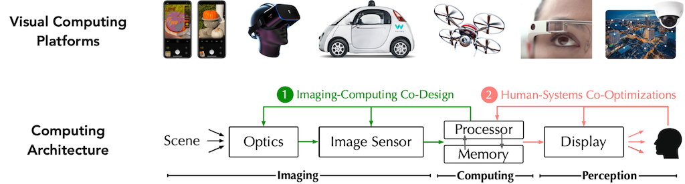 |
Visual computing is a generic term for all computer science disciplines dealing with images and 3D models, such as computer graphics, image processing, visualization, computer vision, virtual and augmented reality, video processing, and computational visualistics. Visual computing also includes aspects of pattern recognition, human computer interaction, machine learning and digital libraries. The core challenges are the acquisition, processing, analysis and rendering of visual information (mainly images and video). Application areas include industrial quality control, medical image processing and visualization, surveying, robotics, multimedia systems, virtual heritage, special effects in movies and television, and ludology. Visual computing also includes digital art and digital media studies. (From Wikipedia)
The Visual Computing Group (VCG) at NJUST spans research activities in Computer Vision, Computer Graphics, Image Processing, Virtual Reality, Augmented Reality, but also includes aspects of Pattern Recognition and Machine Learning. These different areas all focus on the processing of visual information (mainly point clouds, meshes, images, and video): acquisition, processing, representation, analysis, understanding and rendering. In our research, we view visual computing as a closed loop: analysis methods (i.e. computer vision) extract rich scene models from visual data (e.g. images, 3D shapes), and synthesis methods (i.e. computer graphics) convert those models back into observable visual data. The two sides of this loop are mutually reinforcing: analysis of visual data helps to build/learn better synthesis methods (e.g. generative adversarial networks), and the outputs of those synthesis models help to build/learn better analysis methods (e.g. synthetic training data for computer vision systems).
Our work currently focuses on 1) 3D vison, 2) 3D modeling and data synthesis, 3) visual information quality assessment, 4) virtual reality and augmented reality. Other aspects of our work include 1) security and privacy in AIGC, 2) image understanding and processing .
3D Vison
3D vision is a subfield of computer vision that focuses on enabling machines to perceive, understand, and reconstruct the 3D structure of the world from visual data. Its core research encompasses the entire pipeline from 2D inputs (such as single or multi-view images, video, or depth sensors) to 3D representations (including point clouds, meshes, volumetric fields, and neural implicit representations like NeRF). The field increasingly leverages deep learning, differentiable rendering, and foundation models to bridge the gap between 2D perception and physical 3D reality. By modeling geometry, texture, and spatial relationships, 3D vision bridges 2D visual signals with real-world spatial understanding, supporting accurate perception and interaction in complex environments. Practical applications span autonomous driving, robotics, augmented reality, medical imaging, and virtual reality. Currently, our research in the field of 3D vision mainly focuses on 3D understanding and 3D reconstruction.
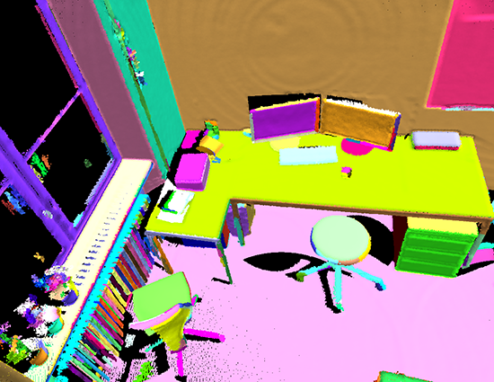 Point Cloud Segmentation |
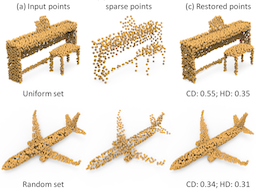 Point Cloud Sampling |
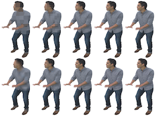 Point Cloud Compression |
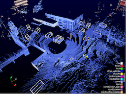 Point Cloud Recognition |
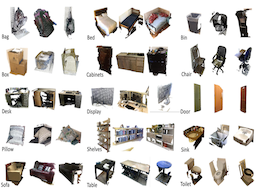 Point Cloud Classification |
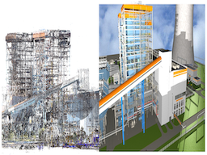 3D Reconstruction |
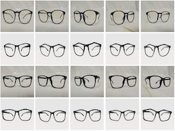 Thin Structure Reconstruction |
3D Modeling and Data Synthesis
3D modeling and data synthesis focus on digitally representing geometric shapes, appearances, and dynamic scenes, as well as generating realistic and diverse visual content. Research in 3D modeling traditionally encompasses geometric processing—such as point cloud denoising, sampling, and surface reconstruction—to transform raw sensor data into topologically consistent meshes or volumetric grids. Modern advancements have shifted toward neural representations, utilizing Neural Radiance Fields (NeRF) and 3D Gaussian Splatting to encode complex scenes into continuous functions for photorealistic synthesis. Parallelly, data synthesis aims to generate high-quality synthetic images, textures, materials, and full 3D assets through procedural generation, generative models, and differentiable rendering. Currently, our research in 3D modeling and data synthesis mainly focuses on 3D model processing, 3D content generation, and multispectral image synthesis.
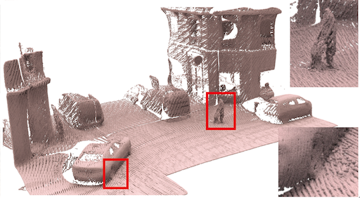 Point Cloud Denoising |
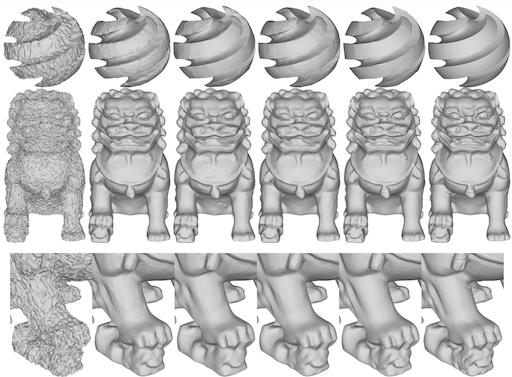 Mesh Denoising |
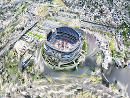 3D Gaussian Splatting |
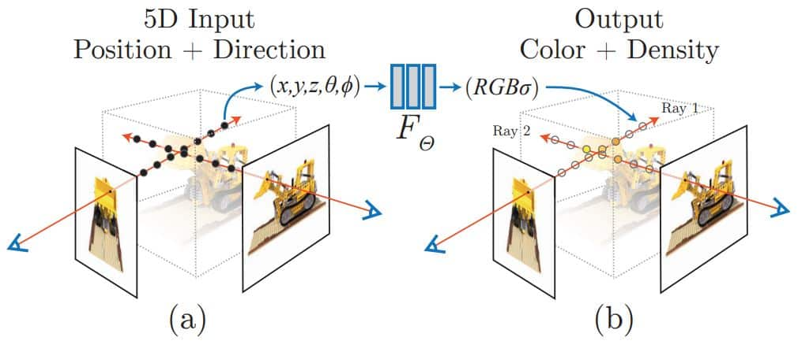 Neural Radiance Fields |
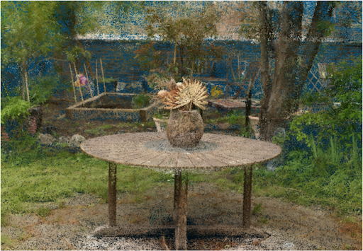 Point Cloud Generation |
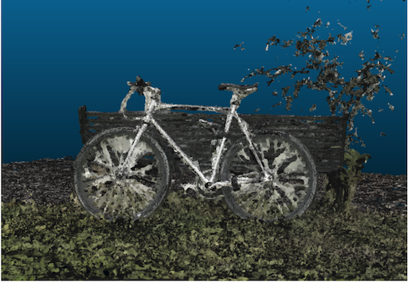 Mesh Generation |
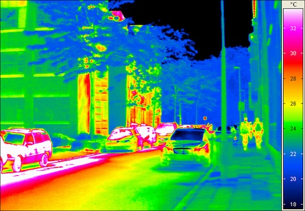 Infrared Image Synthesis |
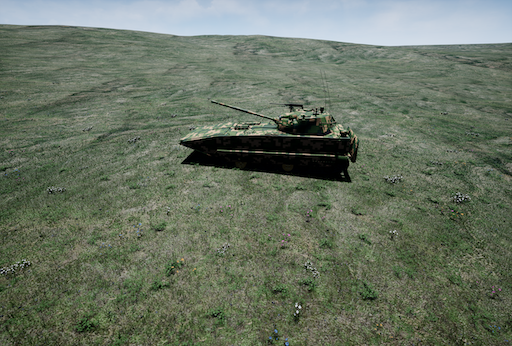 Visible Image Synthesis |
Visual Information Quality Assessment
Visual information quality assessment focuses on designing objective and subjective metrics to quantify the perceived fidelity, geometric fidelity, structural integrity, and physical realism of digital content. This field bridges machine perception and human vision, providing theoretical guidance and quantitative tools for optimizing acquisition, transmission, and reconstruction systems in autonomous driving, 3D reconstruction, and immersive media. Currently, our research in visual information quality assessment mainly focuses on point cloud quality assessment, AIGC quality assessment, and multispectral synthetic image quality assessment.
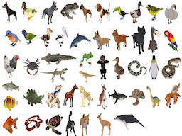 Point Cloud Quality Assessment |
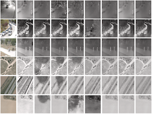 Infrared Image Quality Assessment |
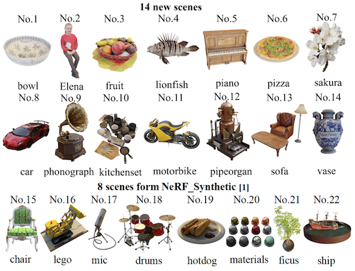 AIGC Quality Assessment |
Virtual & Augmented Reality
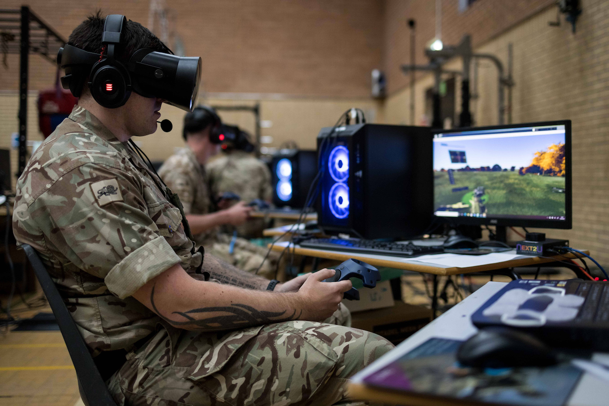 Virtual Reality |
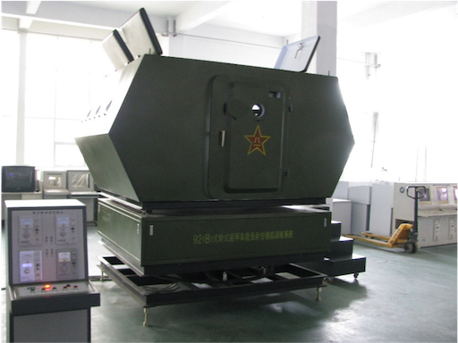 Virtual Reality |
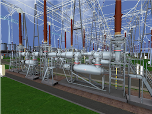 Virtual Reality |
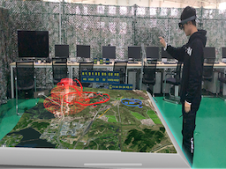 Augmented Reality |
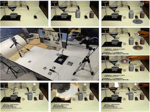 Augmented Reality |
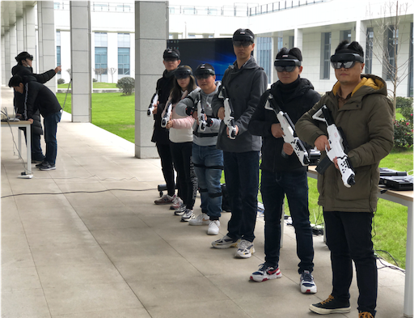 Augmented Reality |
Security and Privacy in AIGC
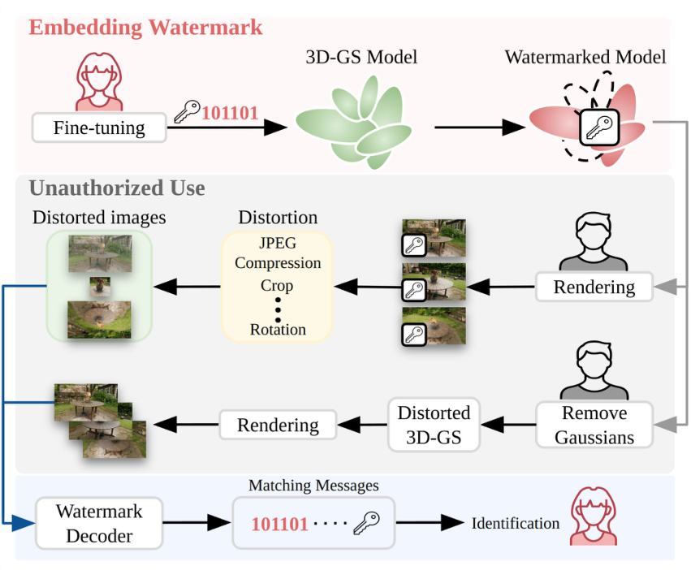 3DGS |
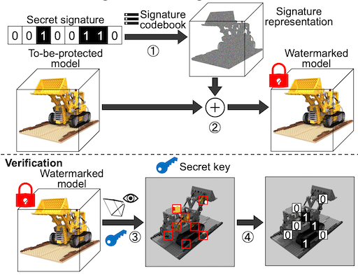 NeRF |
Image Understanding and Processing
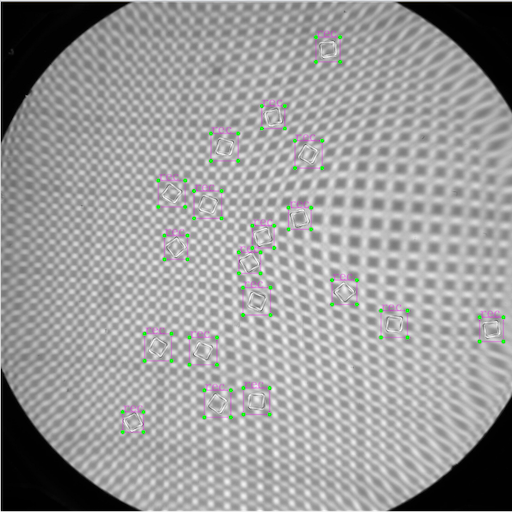 Small Object Detection |
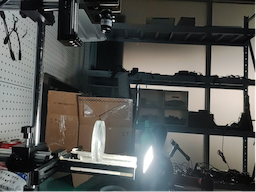 Defect Detection |